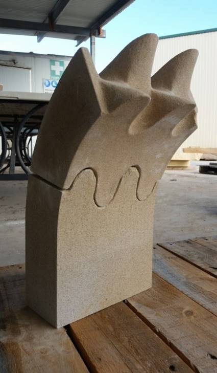
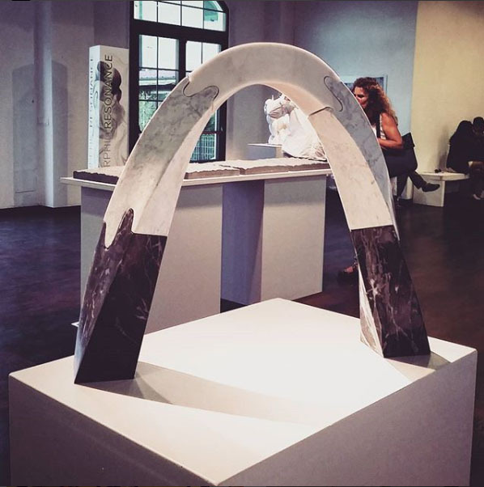

A few years ago, I was involved with an architectural project that involved robotic stone wire-cutting. In short, we used diamonds and robots to create interlocking stone blocks that could be cut with minimal material wastage. Here's the story.
Diamond wires are sometimes used to cut semi-large pieces of stone (in my case, sandstone) that had been quarried. The diamond wire - a filament with couplings that have diamond shards embedded in them - spins along two pulleys really fast, in a similar manner to a blade on a bandsaw, which is then slowly pushed into the stone. Here's a picture of one in action.
Diamond wire for marble mining photo by Dr Peter Tzeferis under a CC-BY-SA license.
{kind=link}
However, relative to other stone cutting tools, the diamond wire is not that commonly used. You might use a wire to cut a huge slab of stone into two, and then you'd shift to your saws and drills for the next stage. The saw would be used to rough out the shape, and drill to get the details. Unlike the diamond wire, which cuts cleanly through the block, the saws and drills break down all the material up to the desired point on the surface, and creates a lot of material wastage.
Simon Weir, Shayani Fernando, and myself worked at the University of Sydney to devise an alternative approach to cutting stone. It turns out it's not entirely a crazy idea to create a portable diamond wire bandsaw and attach it to the end of a 6-axis robotic arm and have an arm cut stone. In fact, it's been done. Let's take a moment to appreciate the sheer majesty of the contraption below.
So clearly, we can do this. Stone cut this way minimises waste and can create some pretty funky shapes quickly. For prototyping, we built an el-cheapo version out of resistance wire so that it could be used to melt foam for prototypes. Here's an example of it attached to the robot.
There's another really interesting usecase of stone. In the natural world, stone forms fascinating curvaceous shapes with plenty of cantilevers. That's because, even though stone is primarily used as a compressive structural element, if it's all in one piece it will support itself. Logistically, however, carrying and installing large cantilevering stone pieces are expensive. It would be nice to cut it into small stone blocks that could then by joined together again, but retain their cantilever.
We came up with the concept of a wave-jointed block. This wave could be cut without any material wastage by the diamond wire, and would interlock with neighbouring stone pieces. Here it is prototyped. You can see how we can build half an arch quite easily.

Here are more pictures of prototypes and cut in Carrara marble in Italy. Most of these pictures are used with permission from Shayani Fernando.


Depending on the stone, there are various issues with chipping on the edges, and time taken to cut. Similarly, due to the wire, there will always be striation marks visible - and an additional sanding process is required to remove it.
It's probably also worth mentioning that the blocks still require a grout between them, to prevent the blocks from grinding against each other and breaking down.
This is an ongoing project and is currently continued by Shayani Fernando in Switzerland. The research was presented at RobArch 2016, a few other places, and most recently at some sort of design festival at University of Sydney again. Here's the full team, currently expanded to include others who have taken the research further.